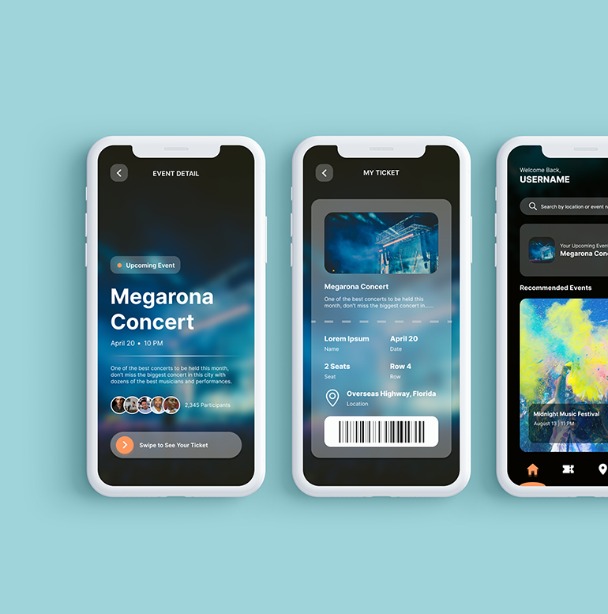

Hi, I am Jessica Zhang
UI / UX Designer
I create intuitive, user-friendly interfaces. As a junior UI/UX designer, I bring a fresh perspective and focus on making every interaction feel natural and easy to use. My goal is to design digital experiences that just make sense to people.

Animal Alliance of Canada
A redesign of the current Animal Alliance of Canada website, enhancing aesthetics and optimizing user engagement and clarity.

Canada Revenue Agency
A redesign of the current Canada Revenue Agency website ensuring easier navigation, resource accessibility, and streamlined user paths.

VoyagerVertex
An AI-powered app streamlining travel planning with personalized recommendations, ensuring authentic local experiences and reliable reviews.

Healthcare Hub
A digital platform connecting users to local medical professionals, streamlining consultations and medication management.

HarmonyHub
Bridging venue owners, artists, and fans; streamlining bookings, event management, and ticketing in the live music ecosystem.